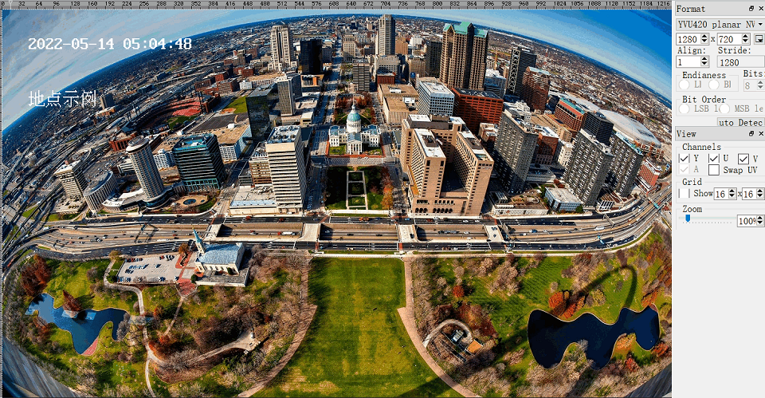

3.2.6. sample_osd 使用说明
3.2.6.1. 程序功能
sample_osd 程序用于给 vps 通道输出的 YUV 数据叠加时间戳，汉语文字 osd。更多丰富的 osd 图像处理使用请参考区域处理章节。
3.2.6.2. 功能使用
程序部署
把 sample/sample_osd/sample_osd 和 1280720.yuv 文件上传到开发板后，给程序赋予可执行权限 chmod a+x sample_osd, 然后执行程序 ./sample_osd。
运行效果说明
通过 osd 叠加后 vps 通道输出的的 YUV 图像如下图所示：

3.2.6.3. 程序开发
源码结构
.
|-- 1280720.yuv # 回灌使用NV12格式文件
|-- main.c # 主程序
`-- Makefile # 编译makefile
编译
当前代码通过一个Makefile文件配置编译
依赖的多媒体头文件和库文件分别在BSP SDK的appsdk目录和system/rootfs_yocto/root目录下，编译时需要注意这两个依赖目录位置是否存在
安装交叉编译工具链后，执行 make 命令直接可以编译生成 sample_osd 程序：
cd sample/sample_osd
$ make clean # 清理源码，保持干净的代码环境
$ make
... ... # 一大段编译打印
$ ls
1280720.yuv main.c main.o Makefile sample_osd
$ make install # 把产出物安装到 out 目录下